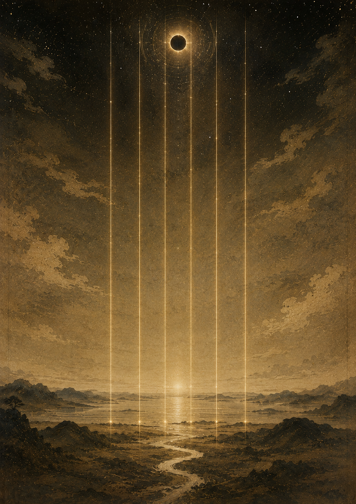

Yoshiyuki Izaki — A Selfish Recital Vol.1
伊﨑善之 自分勝手なリサイタル vol.1
和琴
時空を超えた古への音
2026.8.26 wed ｜ 18:30 開演（18:00 開場）
MUSICASA（ムジカーザ）／ 東京・代々木上原
前売 ¥4,000 ／ 当日 ¥4,500 ／ 学生券 ¥2,000
Scroll

Performers
出演
{{ featured.name }}
{{ featured.yomi }}
{{ featured.bio }}
{{ p.name }}
{{ p.yomi }}
{{ p.bio }}
Access
会場・アクセス
MUSICASA
ムジカーザ
〒151-0066
東京都渋谷区西原3丁目33-1
Tel. 03-5454-0054
小田急線・東京メトロ千代田線「代々木上原駅」東口より徒歩2分
京王新線「幡ヶ谷駅」南口より徒歩12分
※駐車場はございません。公共交通機関をご利用ください。
会場公式サイト ↗